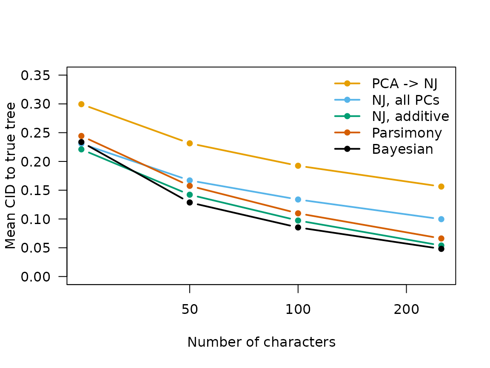

5. Scoring reconstructions and reproducing the figures
Source:vignettes/scoring-and-figures.Rmd
scoring-and-figures.Rmd
library(phyloPCA)
#> Registered S3 method overwritten by 'phangorn':
#> method from
#> [.phyDat TreeToolsScoring one reconstruction
ScoreToTruth() computes the three tree-distance metrics
used in Smith (2026): clustering information distance (CID; Smith 2020,
the primary metric – normalized 0-1, ~0.84 expected between random
21-tip trees), Robinson-Foulds distance (for comparability with Raskin
et al. 2026), and (where both trees are strictly binary) SPR distance.
ExactlyRecovered() reports the (very strict, for 21 tips)
binary criterion of an exact topology match:
data(generative_trees)
truth <- generative_trees[[1]]
guess <- ape::rtree(21, tip.label = truth$tip.label) # a random tree, for illustration
ScoreToTruth(guess, truth, metrics = c("CID", "RF"))
#> CID RF
#> 0.8390693 34.0000000
ExactlyRecovered(guess, truth)
#> [1] FALSEOptimalityRecovery() implements the alternative,
parsimony-specific recovery criterion used for the maximum-parsimony
arms: whether the generative tree is tied for most
parsimonious, rather than whether a search happened to find it – so
a heuristic search’s failure to locate the true topology among several
equally-parsimonious trees is not counted against the parsimony
criterion itself.
The cached results
Every number behind the manuscript’s figures is bundled as package
data. ?phyloPCA::scale and its neighbours document exactly
what each dataset contains and which script produced it (see the “Data”
index at https://phylo-pca.github.io/reference/). At a
glance:
data(scale) # continuous + discrete, NJ + Bayesian, nC 25-250
data(scale_fig1_dists) # 5 method arms on continuous data (Figure 1)
head(scale_fig1_dists)
#> tree nC arm CID RF SPR SPR_exact
#> 1 1 25 pipeline 0.2584360 16 5 TRUE
#> 2 1 25 allpc 0.2975072 12 3 TRUE
#> 3 1 25 additive 0.2391215 14 5 TRUE
#> 4 1 50 pipeline 0.2483474 14 5 TRUE
#> 5 1 50 allpc 0.1033119 4 2 TRUE
#> 6 1 50 additive 0.1320801 6 3 TRUEReproducing Figure 1: which reconstruction method?
Figure 1 of Smith (2026) compares five ways of reconstructing a tree from the same continuous character matrices: the PCA -> neighbour-joining pipeline (Raskin et al. 2026’s method), neighbour-joining on all principal components, neighbour-joining on the additive (squared-Euclidean) distance, maximum parsimony, and Bayesian inference. A simplified, base-graphics version of that comparison, drawn directly from the cached data:
arms <- c(pipeline = "PCA -> NJ", allpc = "NJ, all PCs",
additive = "NJ, additive", mp = "Parsimony", bayes = "Bayesian")
col <- c("#E69F00", "#56B4E9", "#009E73", "#D55E00", "#000000")
meanBy <- function(arm) {
d <- scale_fig1_dists[scale_fig1_dists$arm == arm, ]
sapply(split(d$CID, d$nC), mean)
}
nC <- sort(unique(scale_fig1_dists$nC))
plot(NA, xlim = range(nC), ylim = c(0, 0.35), log = "x", las = 1,
xlab = "Number of characters", ylab = "Mean CID to true tree")
for (i in seq_along(arms)) {
lines(nC, meanBy(names(arms)[i]), col = col[i], lwd = 2, type = "b", pch = 16)
}
legend("topright", legend = arms, col = col, lwd = 2, pch = 16, bty = "n")
The pipeline arm (Raskin et al. 2026’s own method) is the clear outlier; correcting only the distance fed to neighbour-joining (the additive arm) recovers essentially all of the gap to Bayesian inference, without changing the reconstruction method at all.
The full manuscript figures
The three figures actually published with Smith (2026)
(fig_methods.png, fig_alignment.png,
fig_data.png) add production styling – a colourblind-safe
palette, print-sized multi-panel layouts, off-scale annotations – that
is beyond this package’s scope. That styling is the manuscript
repository’s concern, not this package’s; what belongs here, and is
complete, is every number those figures plot: each is one of the columns
documented in the datasets above, produced by the functions in this
package.